The gFEX board of the ATLAS calorimeter trigger has three large processing FPGAs that need to exchange data every bunch crossing. Between them there are 240 differential pairs on the board, and in 2024 I designed the firmware and software that run each of them at 1.12 Gb/s, find the right sampling point on every link by themselves, and keep measuring the margin while real data flows. This post is about how, and about the simulation that made it work on the first try in hardware.
The board
gFEX, the global feature extractor, provides the large-radius jet triggers, missing transverse energy, pile-up estimates and other global quantities to the first-level trigger. It is a single ATCA blade with a 30-layer printed circuit board and 504 high-speed serial links. Three Virtex UltraScale+ FPGAs, called A, B and C, process the calorimeter data, which arrive on 300 optical fibres at 11.2 Gb/s. A fourth device, a Zynq UltraScale+ MPSoC called Z, controls the board, distributes timing and runs the software.
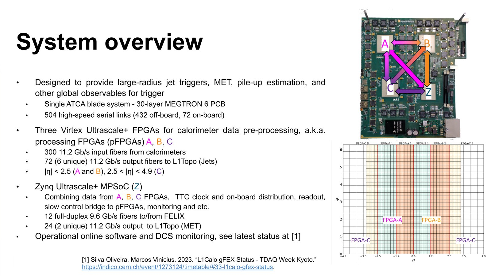
Beyond the multi-gigabit transceivers, the processing FPGAs are wired to each other with ordinary differential pairs: 96 between A and B, and 144 between each of them and C. Some pairs are reserved for clocks. In total there are 240 data links between the three FPGAs.
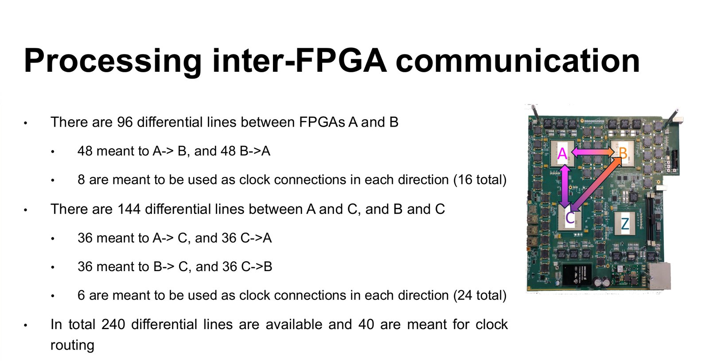
Three problems
The first problem is speed. Each pair has to carry 1.12 Gb/s, four bits per period of a 280 MHz clock. The FPGA I/O blocks can do that with their serialisers and deserialisers (OSERDES and ISERDES) in a quad-data-rate mode, sampling four times per clock period.
The second is where to sample. A bit lasts 0.89 ns. The delay from one FPGA to another depends on the length of each trace on the board and on the clock network inside each FPGA, so it is different for every link and not known in advance. The receiver has to find, for each link, the part of the bit period where the data is stable, and sample in the middle of it. I had solved the same problem about ten years earlier, for the muon trigger outputs of my master's thesis, and used the same idea: a second sampler that is delayed slightly with respect to the first, and a comparison between the two. When they disagree, there was a transition between them. Scanning the delay maps out where the data changes.
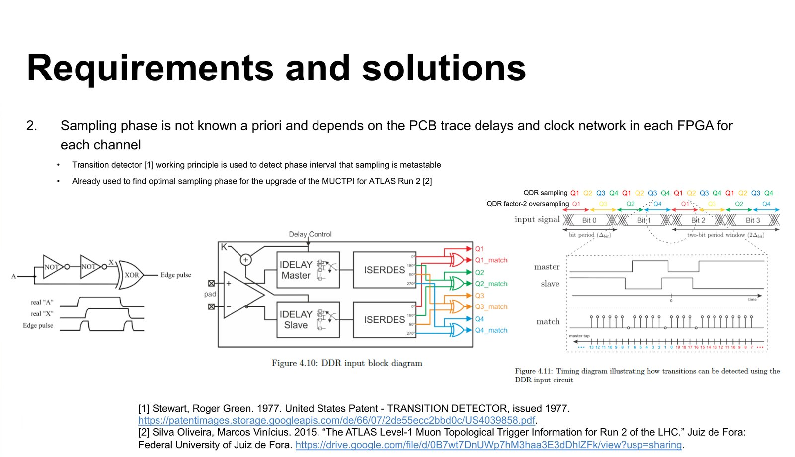
The third is word alignment. The serialiser sends four bits at a time and the deserialiser hands four bits at a time to the logic, but nothing guarantees that the receiver's group of four is the same group the transmitter sent. Depending on the phase between data and clock, the received word can be shifted by one, two or three bits. The obvious fix is to look at two consecutive words, eight bits, and pick the right four. That works for every phase, but more than one choice gives correct data, and they differ in latency. Looking at seven bits instead of eight gives exactly one correct choice for every phase, and that choice always takes the newest data, so the latency is the lowest possible and the same after every reset.
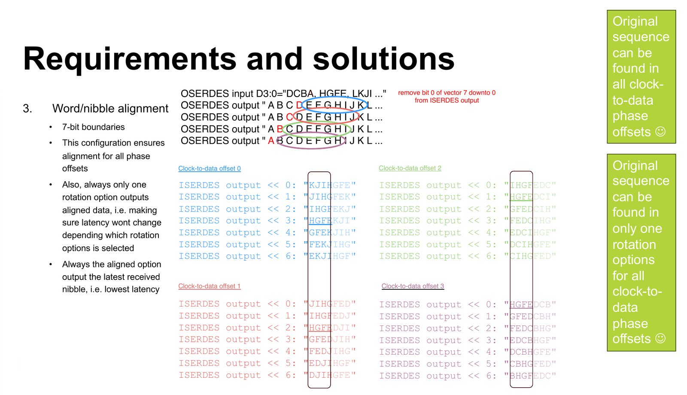
Two IP cores and a lot of registers
The design has two blocks. The transmitter core sends either user data, a counter or a PRBS-7 pseudo-random pattern, and can inject bit errors on demand. The receiver core has two complete sampling paths per link, a primary and a secondary, each with its own programmable delay line of up to 512 taps, its own deserialiser and its own rotation stage. The primary path carries the data. The secondary one can be moved freely, and four mismatch counters, one per sample position, count how often it disagrees with the primary. A PRBS checker counts real bit errors.
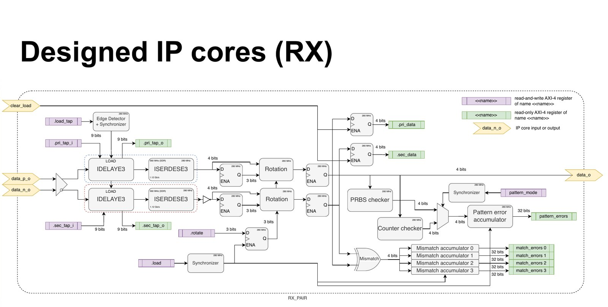
Every control and every counter is an AXI register. That was deliberate. The firmware does not decide anything: it measures, and the software decides. Choosing the sampling point, the rotation and when to start and stop a measurement are all done in Python on the Zynq. A change of strategy is a change of software, which is quicker to make and to test than a new bitstream.
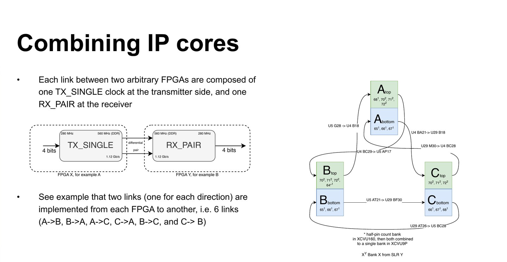
The processing FPGAs have no processor of their own, so the software reaches them from the Zynq through the AXI Chip2Chip bridge over a multi-gigabit link. The register map of all four FPGAs is described in YAML with Wishlist, a tool I wrote to generate the VHDL address decoders and the software register tree from the same description, so that firmware and software cannot drift apart.
Disruptive and non-disruptive scans
The software can run two kinds of scan. In the disruptive one, both samplers sweep the whole delay range together, and the data is lost while they do. It is used once, to find the stable region and put the primary sampler in its centre. In the non-disruptive one, the primary sampler stays where it is and keeps receiving data, while the secondary one sweeps. The mismatch counters then draw the eye of the link while it is in use, without interrupting it.
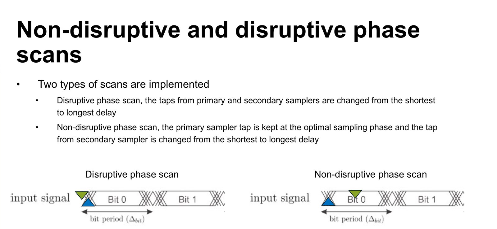
Simulating the whole board, software included
Before any of this went to hardware, it ran in a simulation of the whole board: all four FPGAs, the Chip2Chip bridges and the registers, driven by the same Python low-level software that runs on the Zynq. The test bench is written with Cocotb and runs in Siemens Questa. Each link between FPGAs is given a random delay in the simulation, and the software has to find it.
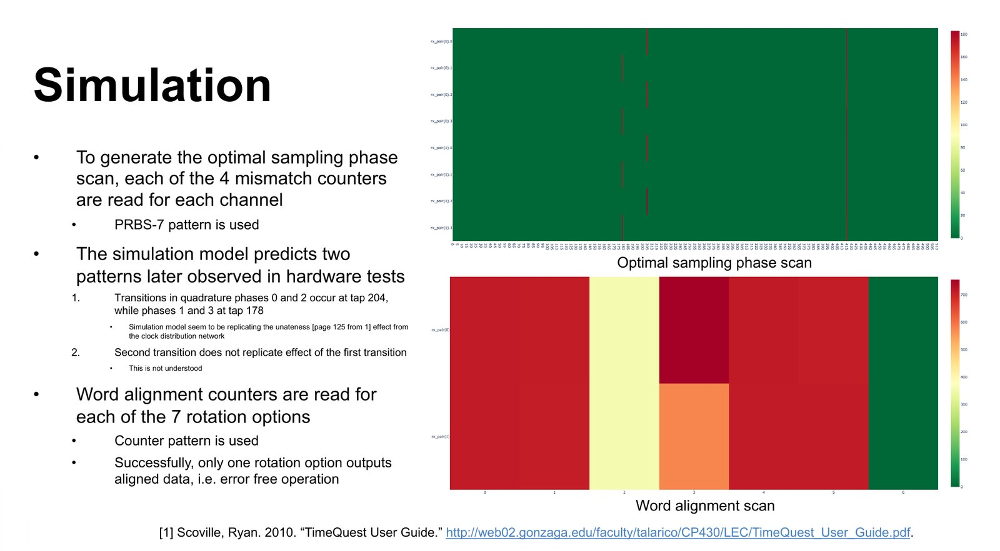
The simulation did more than check the logic. It reproduced two effects that we later saw on the board: the transitions of two of the four sample phases appeared at a different tap from the other two, most likely because of how the clock network inside the FPGA treats rising and falling edges. Seeing that first in simulation meant that it was understood, not puzzling, when it showed up in the lab.
The builds and tests run automatically. Every change goes through simulation in two configurations, synthesis, implementation, and tests on a board in the lab, and the results, reports and bitstreams are published on a generated static website.
Clocks
The FPGAs are made of several dies, called super logic regions (SLRs), and the links of each FPGA are spread over two of them. The serialisers need a 280 MHz and a 560 MHz clock with very little skew between them, under 200 ps. We tried three clock topologies. In the final one, a single input clock feeds a separate clock generator in each SLR, so that each serialiser gets its clocks from its own region while all clocks still share a common source. Placement constraints for all three FPGAs, whose links are spread differently over their banks, are generated by a script from the connectivity table, the same idea as PCBpy.
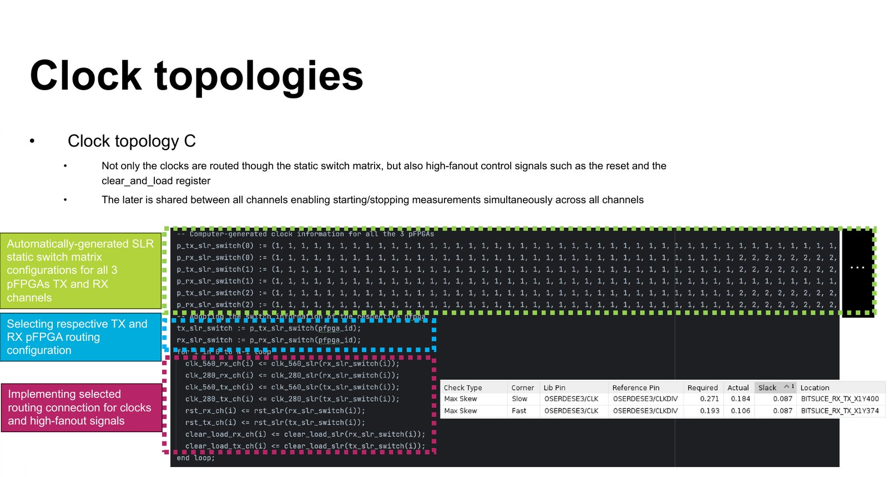
In hardware
Firmware and software were deployed on the board and worked at the first attempt. The scans in the lab looked like the scans in simulation, including the unateness effect. The stable region is wide. In the worst link, the unstable part covers 70 taps, 27% of the bit period. The bit period is about 260 taps, which gives an average tap of 3.43 ps, within the datasheet range.
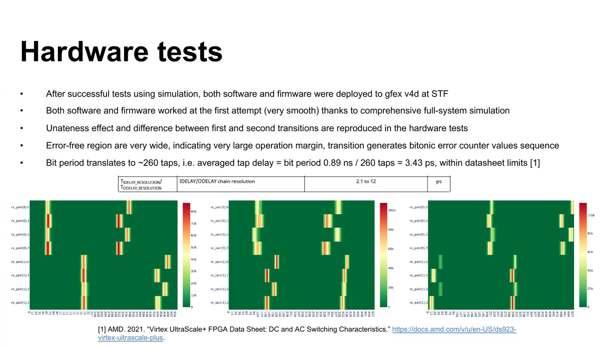
Word alignment found exactly one correct rotation on every link, as designed. Then all four FPGAs were reset hundreds of times over eight hours, and the stable region did not move by a single tap.
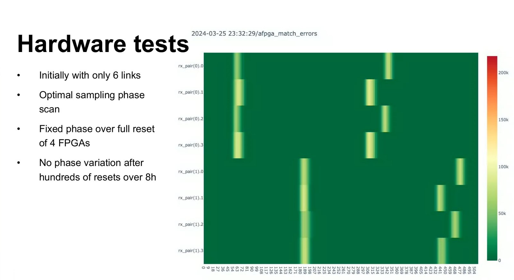
For the error rate, the primary samplers stayed at their optimal point while all 240 links carried PRBS-7 for three days. About 2.9 × 1014 bits went through each link without a single error. That gives a bit error rate below 1.03 × 10−14 per link with 95% confidence, fewer than one error per day, and below 4.3 × 10−17 for the 240 links together.
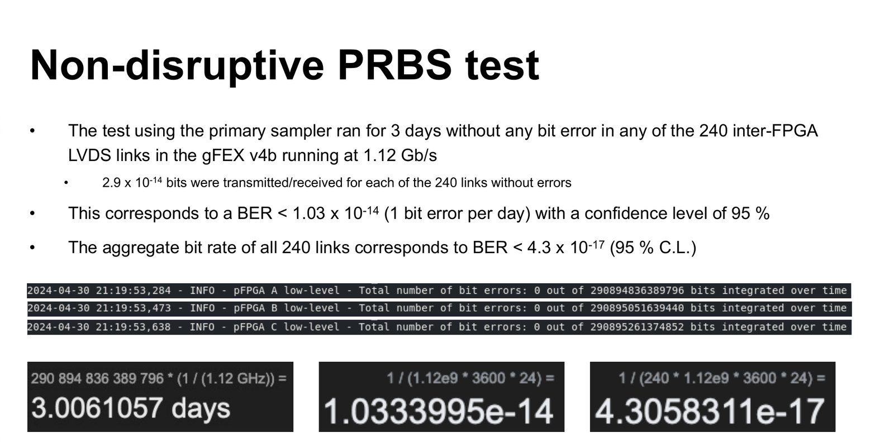
During the same run the non-disruptive scans measured the eye of every link without disturbing it.
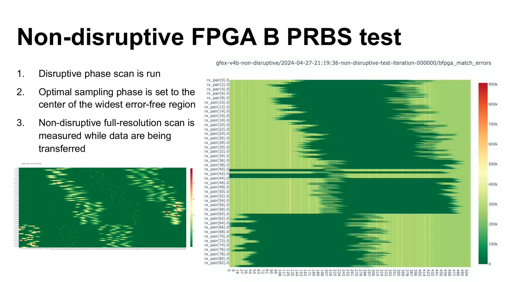
What made it work
Three choices. Putting the decisions in software made the firmware small and the procedure easy to change. Keeping the measurement hardware in the production firmware means the margin of every link can be checked at any time, not only once in the lab. And simulating the whole board with the real software meant the first hardware test was a confirmation, not a debugging session.